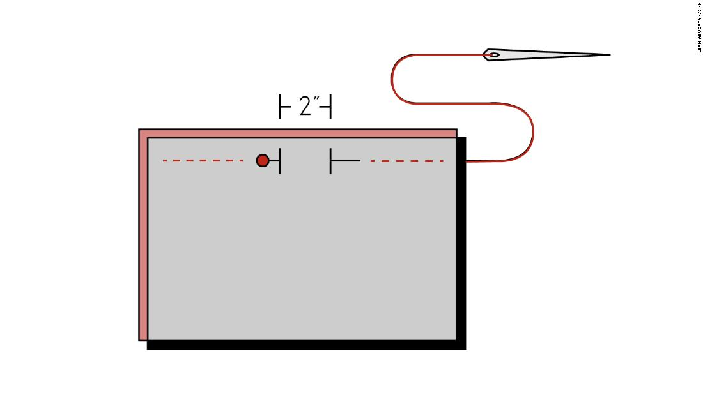
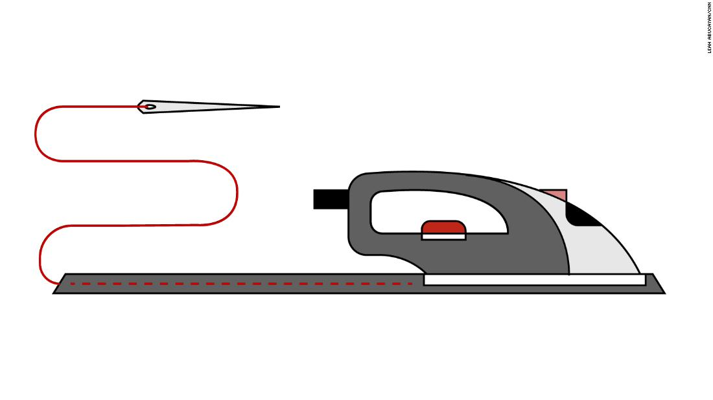

2 pieces of tight-weave cotton fabric, 9 x 6 inches (per mask)
4 strips of fabric, 2 x 16 inches (per mask)
Ruler
Sewing machine OR needle and thread
Pencil or marker
Scissors
A handful of sewing pins
Iron
Make your mask:
Cut your fabric into two 9 x 6-inch rectangles. Place them on top of each other.
On the top of the 9-inch side, pin or mark a 2-inch opening in the center of the top edge of the 9-inch side, between the 3.5- and 5.5-inch points, along the top edge. Then, sew the edges on either side of where you pinned or marked the opening. You'll need that 2-inch opening to turn the mask right side out.

Sew the other three sides of the mask shut, too.
Turn the mask right side out through the 2-inch opening you left on the top. Then, press the mask with an iron to get rid of wrinkles.
Line your ruler up vertically along the 6-inch side of the mask. Starting at the 1.5-inch line, pin where you'll sew your pleats down the side. These pleats help the mask stretch.
Bring the pin at the 1.5-inch line down to the 2-inch line, and voila, you've made a pleat! Repeat with the 3-inch to the 3.5-inch and the 4.5-inch to the 5-inch line. Pin your new pleats, and repeat on the other side.
Sew the sides of your mask up so the pleats are laid flat.
Make the Mask Ties:
Cut four strips of fabric, 2 inches wide by 16 inches long.
Fold them in half lengthwise.
Turn them under 1/4-inch on the long side.
Iron them in place, then stitch the long side shut.

Pin each tie to a corner of the mask.
Sew around the perimeter of the mask once more so the ties are attached -- and now you've completed your mask.
"Homemade masks are partially effective," said Dr. Koushik Kasanagottu, an internal medicine resident at Johns Hopkins Bayview Medical Center in Maryland.
They offer a physical barrier from viral particles, he said, but they don't have the filters that N95 respirators do.
But they're better than nothing, especially for people who only go out in public to make a quick trip to the grocery store or pharmacy, said Anna Davies and Raina MacIntyre, public health researchers and authors of two separate studies on the effectiveness of cloth mask.
It's important to note, though, that masks cannot replace social distancing measures. Maintaining at least six feet of distance from others and staying home as much as possible is still the best way to prevent the spread of the virus.
How to clean them?
You should launder the masks before and after each use to clean off any germs you might have picked up in public. Hand wash the masks or put them in a mesh wash bag in the washing machine so they don't fall apart, and use a high heat setting.